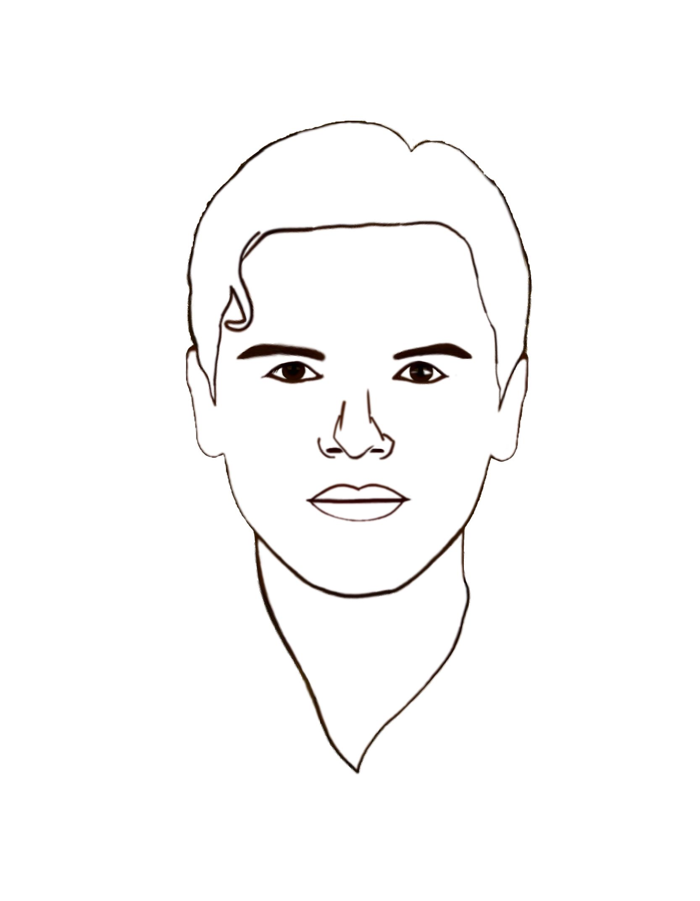

About us
Vađđa today is an open project run as a NGO aimed to popularize Votes' culture among the Internet community.
The project's target is to provide higher exposure and increase the community's interest in Votic culture and history.
The site is run by enthusiasts, thus support of any sort from the users' side is welcome.
This portal is a part of From the west to the eastdeveloping project aimed to expose ethnography and local history of peoples of Russia in general.
Some materials presented on this site, e.g. images, video- or audio-files, might be copyrighted. Such materials are presented to the site's users for educational purposes only and the rights on them are not claimed by the site or its' staff.
Our team
From the west to the east project's members
- 